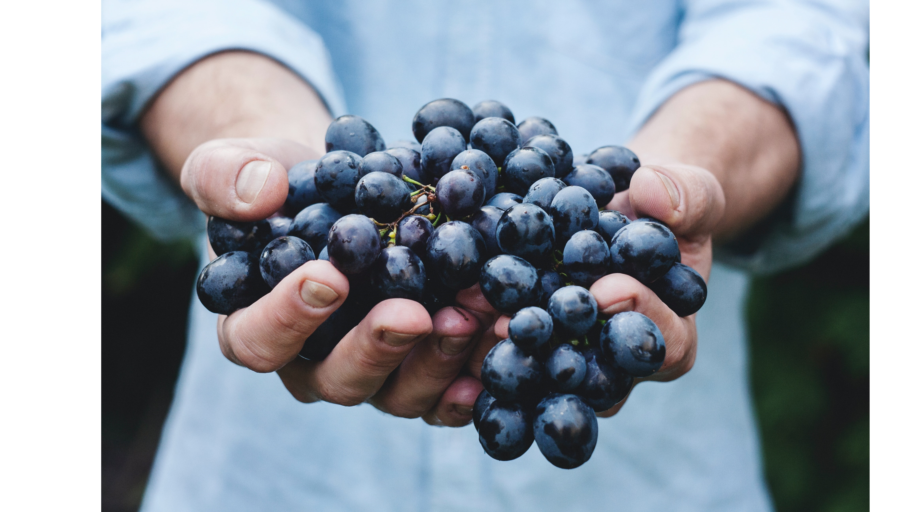
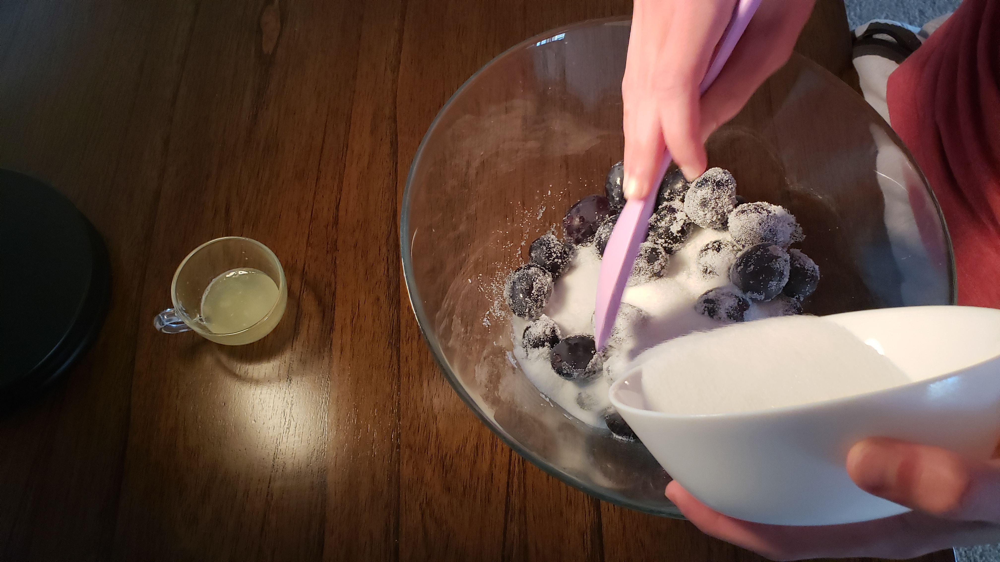
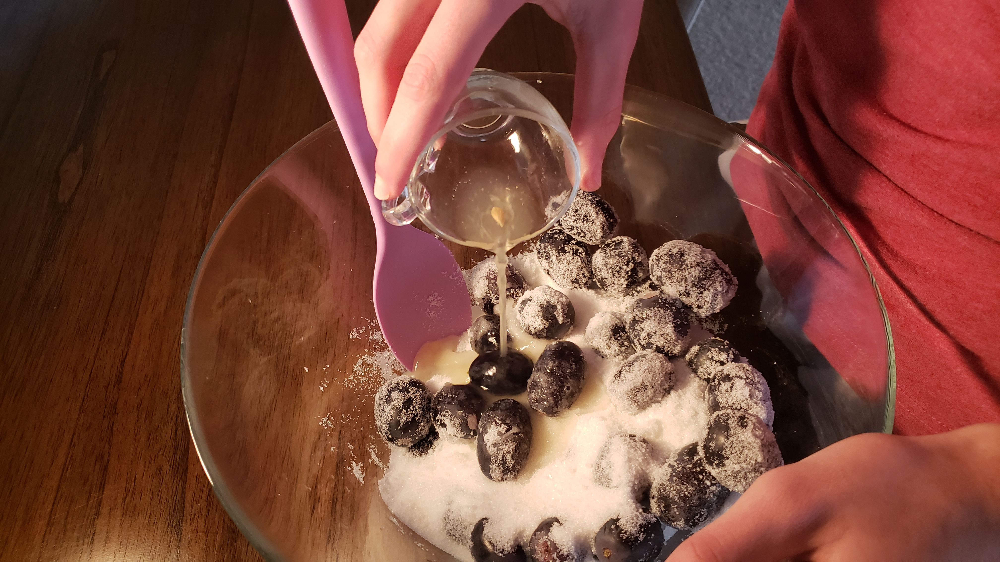
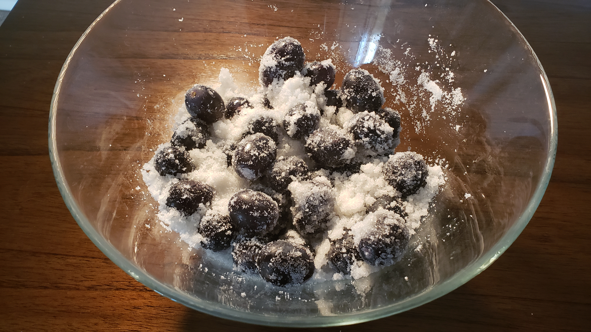
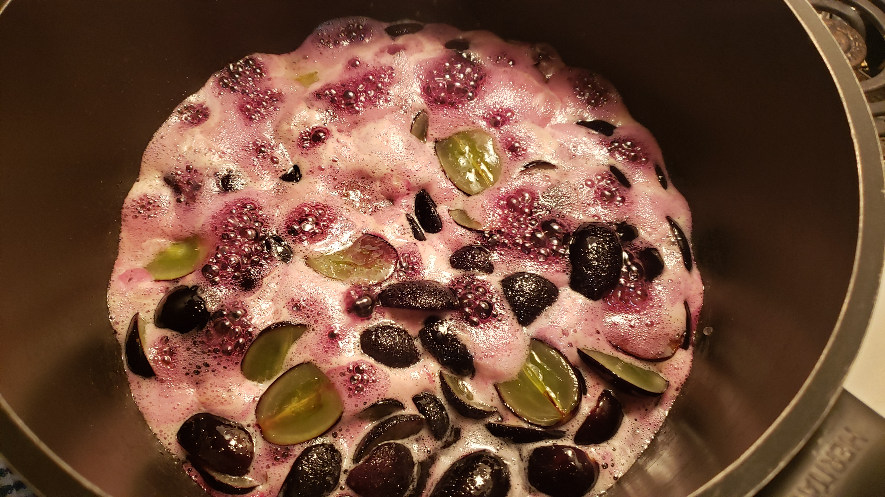
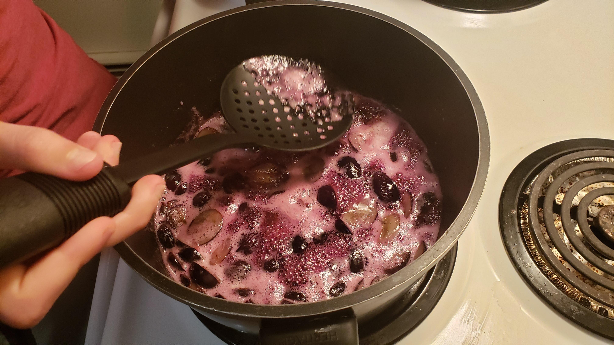

LE RAISIN ONTARIEN
Des raisons pour manger du bon raisin ontarien

Description
Le raisin est un fruit (plus spécifiquement, une baie) qui pousse en grappes de 15 à 300, et peut être cramoisi, noir, bleu foncé, jaune, vert, orange et rose. Les raisins “blancs” sont en fait de couleur verte, et sont dérivés du raisin violet, qui lui est dérivé du raisin noir. La couleur du raisin dépends de la présence de certains pigments appelés anthocyanines, et leur concentration dans le fruit. Ces changements de couleur sont obtenus par des mutations génétiques. En effet, plus la quantité d'anthocyanines est élevée, plus le raisin sera sombre.
Valeur nutritionelle
100 grammes de raisin cru contiennent environ :
- 69 calories.
- 81 grammes d'eau.
- 18 grammes de glucides.
- 0.7 grammes de protéines.
- Très peu de graisses saturées, cholestérol et sodium.
Les raisins sont aussi une très bonne source de vitamine K et C.
Disponibilité
Les raisins produits en Ontario sont disponibles à la fin de l'été et le début de l'automne, c'est à dire autour d'Août et Septembre.
Production
Les meilleurs types de sol pour cultiver des raisins sont des terreaux sableux avec un PH entre 6.5 et 7.5, ainsi qu'un taux d'argile inférieur à 25%. Il faut aussi que la température minimum hivernale soit entre -20 et 30° Celsius.
Les raisins sont plantés au début du Printemps. Il est nécessaire de leur fournir un support vertical pour leur permettre de bien se développer. On taille les vignes chaque printemps pour les garder en santé et s'assurer qu'elles se développeront correctement. Durant les premières années, les vignes ne produisent que peu ou pas de raisins, en faire pousser demande donc beaucoup de temps et énergie investie.
La grande majorité des raisins produits en Ontario sont originaire de la péninsule de Niagara, aussi appelée “Niagara Fruit Belt”, ainsi que la rive Nord du Lac Érié. Les principales variétés de V. vinifera cultivées sont le Chardonnay, le Merlot, le Cabernet Franc et le Riesling.
Recette et Conservation
Un bon moyen de conserver les raisins est la confiture. Les confitures étaient, dans le passé, (et encore aujourd'hui) le moyen privilégié pour conserver les fruits les plus fragiles. C'est le sucre qui permet aux fruits de se conserver, en les désséchant. C'est donc un mets facile à cuisiner, savoureux et un excellent moyen de conserver nos fruits.
Voici une recette assez simple et très bonne, donc n'hésitez pas à l'essayer chez vous !
Liste d'ingrédients :
- 750 grammes de raisins.
- 380 grammes de sucre
- 1 demi-citron.
Ajoutez le sucre aux raisins, puis le jus de citron pour empêcher la cristallisation. Laissez les macéerer pour 45 minutes/1 heure. Vous pouvez aussi les couper en deux afin d'obtenir une meilleure macération.
  Cuire à feu moyen pendant 40 minutes. Écumez bien le haut (retirer les bulles en haut de la marmite) et continuez de remuer pour évitez que les fruits se collent au fond.
 Voici le résultat final !

Toutes les images utilisés ont été prises par moi-même et ma chère maman.
Gallerie

{kind=link}
{kind=link}
{kind=link}
Bibliographie
Pour rédiger cet article, il a fallu utiliser des sources fiables et variées. J'en fais donc une liste ici, dans un souci de transparence. Pour des informations plus détaillées sur le sujet, veuillez consulter ces pages.
- Nutrition Data — Raw Grapes Nutrition Facts
- Grape Growers of Ontario
- Ontario Foodland — Grapes
- About Ontario — Economy section, Agriculture subsection
- Wines of Canada — Ontario
- Statistical Overview of the Canadian Fruit Industry 2018
- Wikipedia — Ontario Wine
- Ontario Grapes Care Sheet
- Canadian Encyclopedia — Fruit cultivation
- Canadian Encyclopedia — Grape
- VQA Ontario
- Grape Production Statistics in Ontario
Mehdi Benallegue. Design by HTML5UP.